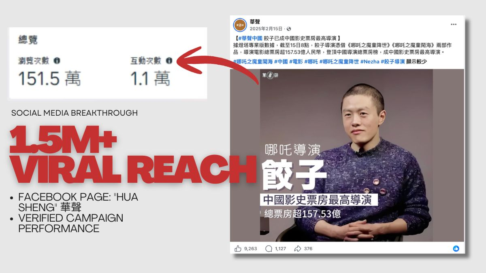
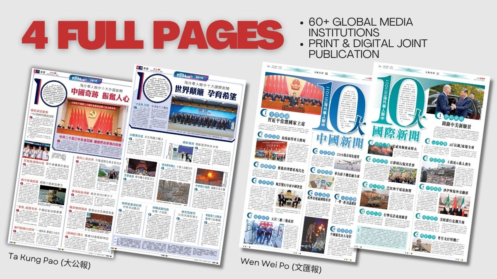

Selected work
Work 作品

Social Media Operations
Facebook & Instagram Zero-to-One Social-Media Operation Facebook & Instagram 0-1 社群帳號運營
Social Media Operator, Content Planner 社群運營 | 內容策劃
+Overview / 項目概述
Led full-cycle social-media build-up and daily operation for Chinese-speaking audiences. Covered content calendar arrangement, bilingual marketing copywriting, visual production, boosted-post campaign execution, KPI tracking and performance insight reporting. Applied Canva-AI for graphic production and generative-AI tools to optimise content workflow.
面向中文受眾，負責帳號 0 到 1 搭建與日常全流程運營，包含內容排期、繁簡雙語營銷文案、視覺物料製作、Facebook 付費貼文推廣、KPI 數據監測與成效洞察報告；使用 Canva-AI 製作視覺，借助生成式 AI 優化內容工作流程。
Key Responsibilities / 主要工作
1. Plan monthly content calendar; draft Simplified & Traditional Chinese marketing captions and promotional content.
2. Create social visuals via Canva; execute Facebook boosted-post campaigns.
3. Monitor audience engagement metrics; compile performance reports and extract actionable business insights.
4. Observe Hong Kong and Mainland social trends to guide content iteration.
1. 策劃月度內容排期，撰寫繁簡中文營銷貼文與宣傳內容。
2. 使用 Canva 製作社交視覺物料，執行 Facebook 貼文付費加熱。
3. 監測用戶互動數據，輸出成效報告，提煉可落地營銷洞察。
4. 跟進香港及內地網絡趨勢，反饋優化內容方向。
Key Outcomes / 項目成果
- Grew to 20k+ followers on Facebook, 15k+ followers on Instagram within one-year timeframe.
- Produced multiple high-reach posts with 100k–1M views.
- Regularly delivered data-driven reports to support internal marketing decision-making.
- 一年內實現 Facebook 粉絲 20,000+，Instagram 粉絲 15,000+。
- 產出多篇 10 萬–100 萬級瀏覽量爆款貼文。
- 定期輸出數據報告，為內部營銷決策提供參考。

Project Management
Global Chinese-Media News Voting Project 全球華媒新聞票選專案
Project Lead, Cross-party Liaison 項目負責人 | 跨機構溝通協調
+Overview / 項目概述
High-intensity short-cycle global media collaboration project. Managed multi-team alignment and communication with over 60 overseas media partners within a tight 15-day timeline.
短期高強度全球媒體協作專案，15 天時間內完成多團隊同步，對接 60 餘家海外媒體合作夥伴。
Key Responsibilities / 主要工作
1. Align 5 internal teams; liaise and follow-up with more than 60 global media partners.
2. Conduct large-scale information collection, classification and document organisation.
3. Ensure on-time project output and publication.
1. 協調 5 個內部部門，對接跟進 60+ 全球媒體合作夥伴。
2. 大規模資訊收集、分類、資料整理。
3. 保障項目成果按時輸出與發布。
Key Outcomes / 項目成果
- Project outputs officially published on Ta Kung Pao, Wen Wei Po and corporate web portals.
- 項目成果正式刊登於《大公報》《文匯報》及集團網絡門戶。
PR & Event Planning
Overseas Chinese Media Annual Conference Sub-venue Coordination 海外華人媒體年會分會場統籌
Project Coordinator 專案協調負責人
+Overview / 項目概述
Cross-functional offline event project under resource constraints. Responsible for workflow arrangement, stakeholder liaison and on-site support.
資源有限條件下執行的跨部門線下活動，負責流程安排、合作方溝通協調與現場支援。
Key Responsibilities / 主要工作
1. Co-ordinate internal teams and external guests & partners.
2. Manage project schedule, document sorting and follow-up of action items.
3. Provide on-site operational support for event delivery.
1. 協調內部團隊與外部嘉賓、合作夥伴。
2. 把控項目時間節點，整理文件資料，跟進各項待辦。
3. 提供活動現場執行支援。
Key Outcomes / 項目成果
- Completed smooth event delivery; work performance recognised by management.
- 保障活動順利落地，工作表現獲管理層認可。